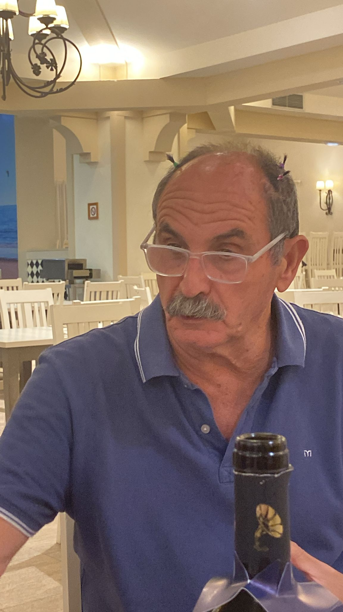
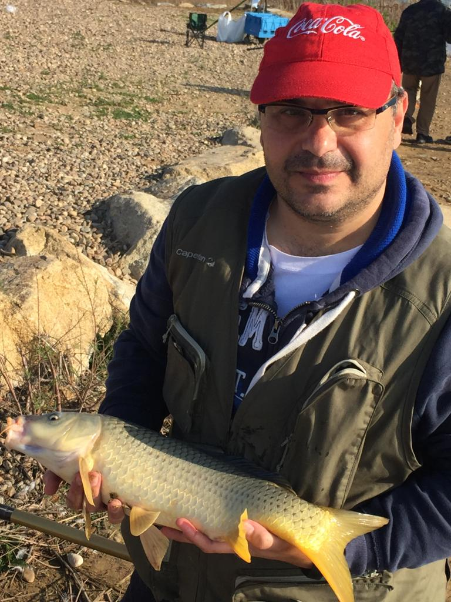
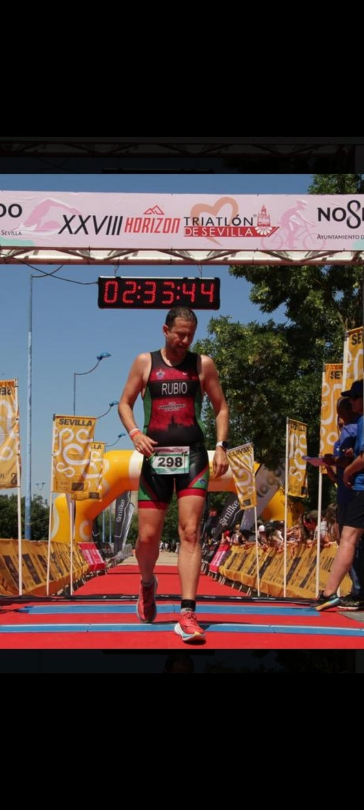
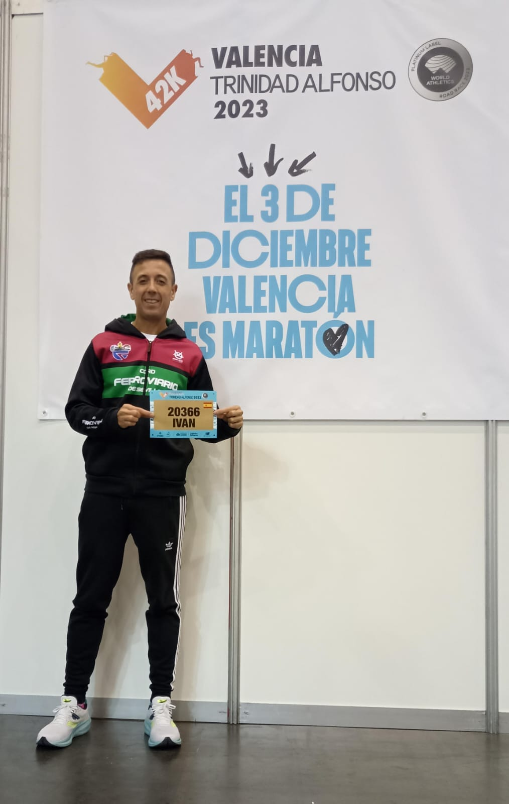
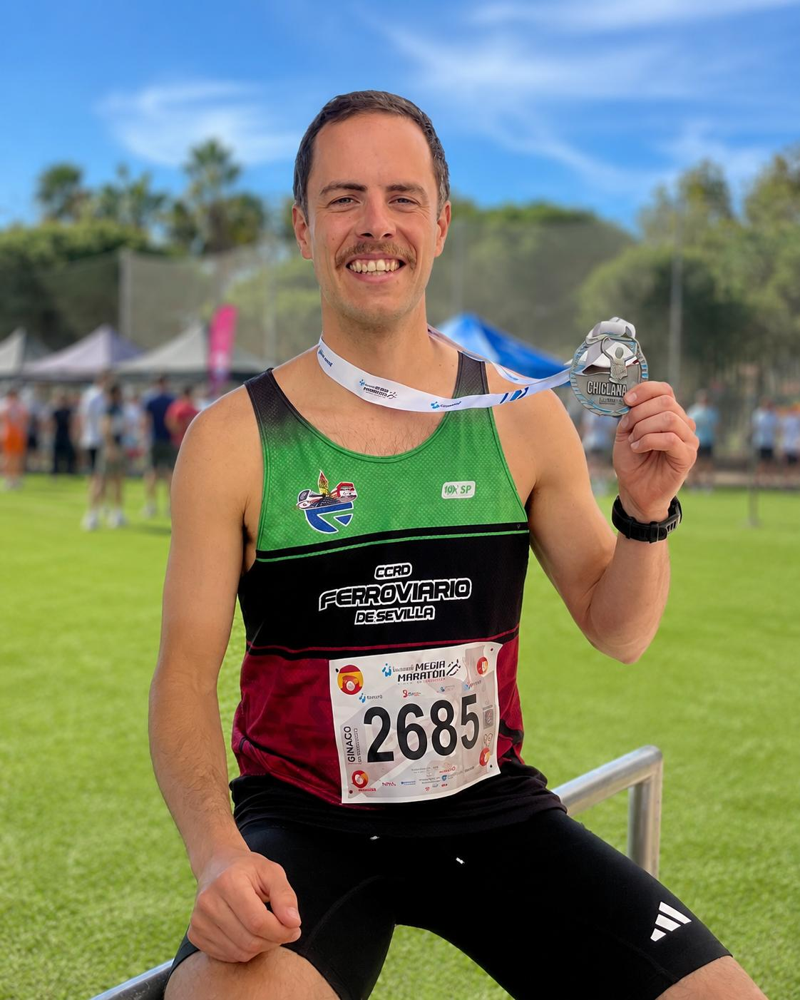
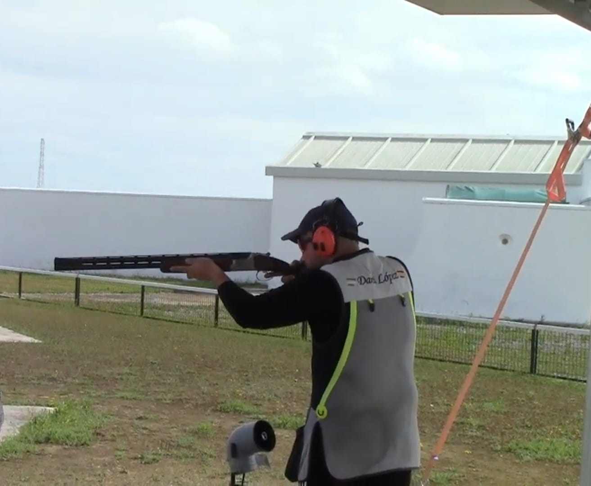
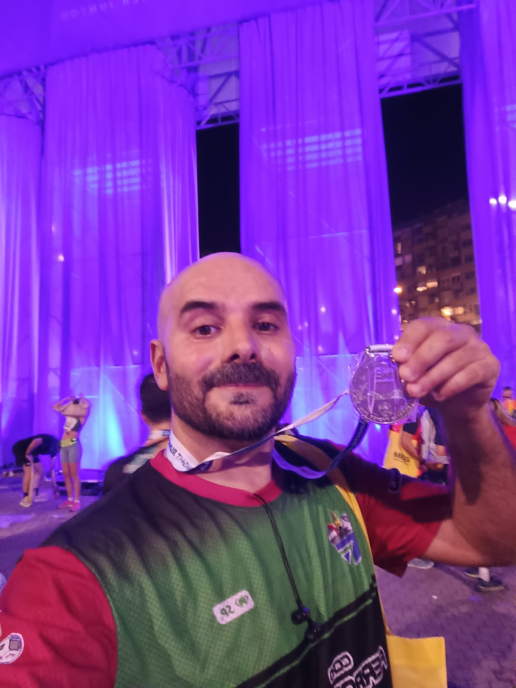
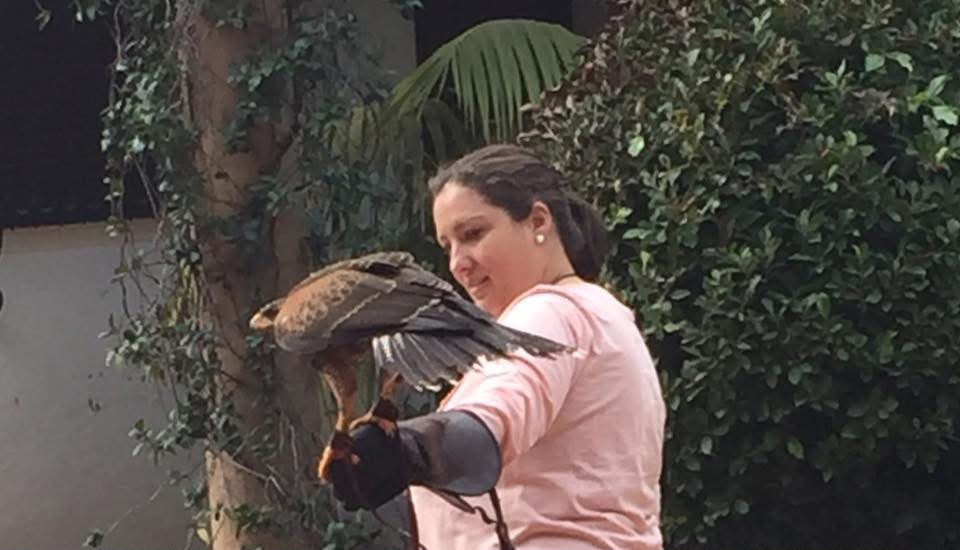

Compromiso y Gestión
Conoce a los miembros del equipo directivo del CCRD Ferroviario de Sevilla. Pasa el cursor (o toca en dispositivos móviles) sobre la fotografía de cada miembro para conocer sus detalles profesionales, trayectoria y funciones en el club.

Jorge Gómez Asencio
PresidentePerfil Profesional
- Profesión: Ferroviario.Mando Intermedio nivel A en Renfe SP.
- Formación: .
- En el club: Encargado de la coordinación general del centro cultural.
- Intereses: Aficionado al senderismo.

Julián Fernández Muriana
VicepresidentePerfil Directivo
- Profesión: Ferroviario.
- Formación: .
- En el club: Asiste al presidente en la coordinación general del centro cultural.
- Intereses: Aficionado al senderismo.
vicepresidencia@ccrdferroviario.com

Miguel Ángel Pañero de Luis
SecretarioPerfil Directivo
- Profesión: Protector.
- Formación: .
- En el club: Responsable de la custodia de libros oficiales, actas y comunicaciones.
- Intereses: Aficionado al atletismo y a la pesca.
secretaria@ccrdferroviario.com

Alberto Ruiz Rubio
TesoreroPerfil Directivo
- Profesión: Ferroviario. Maquinista Jefe de tren en RENFE SP.
- Formación: Lic. ciencias ambientales. Posgrado en gestión ambiental y desarrollo sostenible.
- En el club: Control presupuestario, cuentas del club y gestión contable.
- Intereses: Aficionado al triatlón, atletismo, tenis y pádel.

Ivan Román Valero
VocalPerfil Directivo
- Profesión: Ferroviario. Maquinista en Metro de Sevilla.
- Formación: .
- En el club: Vocal de atletismo. Tesorero de la sección de atletismo.
- Intereses: Aficionado al atletismo.

Ignacio Sabeino Nosti
VocalPerfil Directivo
- Profesión: Ferroviario. Maquinista en Metro de Sevilla.
- Formación: .
- En el club: Vocal. Presidente de la sección de atletismo.
- Intereses: Aficionado al atletismo, ciclismo y triatlón.

Daniel López Borrallo
VocalPerfil Directivo
- Profesión: Protector. Pintor.
- Formación: Ingeniero agrícola.
- En el club: Vocal de tiro al plato. Presidente de la sección de tiro al plato.
- Intereses: Aficionado al tiro deportivo y a la caza.
vocal3@ccrdferroviario.com

Nicolás González Cobos
VocalPerfil Directivo
- Profesión: Ferroviario. Supervisor de circulación en ADIF.
- Formación: Bachiller.
- En el club: Vocal.
- Intereses: Aficionado al atletismo y al ajedrez.
ccrdferroviario@hotmail.com

María de los Remedios Borrego Rodriguez
VocalPerfil Directivo
- Área:
- Trayectoria: .
- En el club: .
vocal5@ccrdferroviario.com